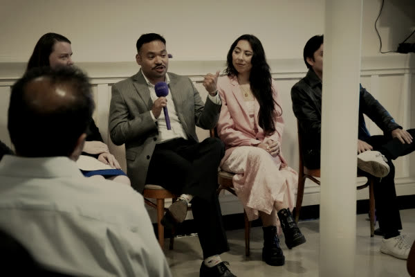
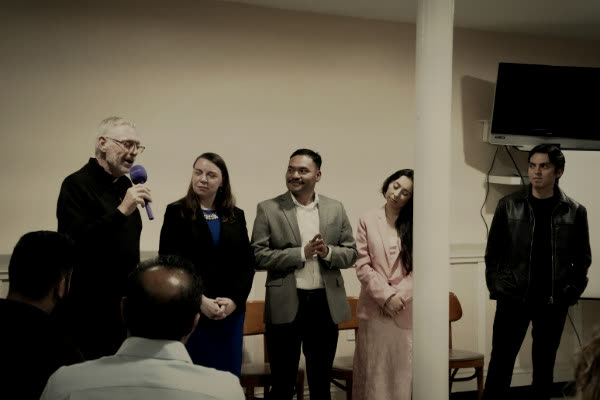
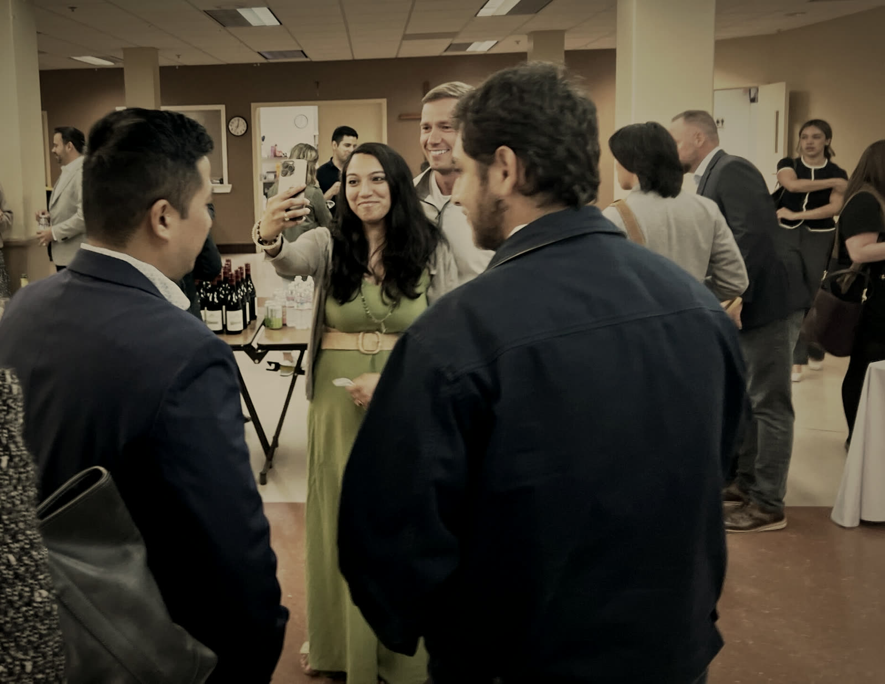
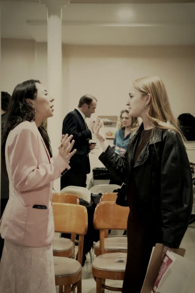
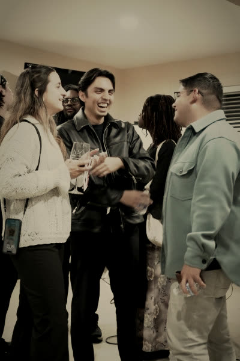
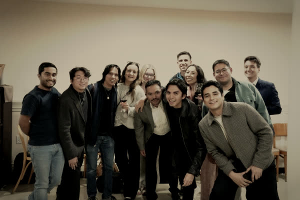

Formed to lead with faith, wisdom, and courage
A community of young Catholics rooted in Christ, leading with conviction. Formation, action, and prayer in the Bay Area.
Leadership development
Service initiatives
Travel & pilgrimage
A leadership institute, not youth ministry
Talks and panels
Speakers from the Dominican School, the Lay Mission Institute, and the Archdiocese, on vocation, work, and the laity.

Formed with our pastors
Evenings built with the Archdiocese and religious communities: not adjacent to the Church, inside it.

Friendships that hold
The same faces on a weeknight in the city — receptions, service, and travel together.

An evening at CLIA
Check-in and a reception from 6:30 PM, a talk, a panel discussion, and a networking reception afterward. Wine and small bites are provided.



Business casual encouragedThe laity are called to make the Church present and operative in those places where only through them can it become the salt of the earth.Lumen Gentium, §33
Our next evening
Next event
The Work of Human Hands
The Eucharistic necessity of your royal priesthood
By baptism you share in Christ's royal priesthood. An evening on what that means in practice — how the work of your hands is carried to the altar, how your particular mission is discerned, and what the Church can accomplish in no other way than through you.
- Check-in and reception. Wine and small bites.
- Talk: Fr. Michael Sweeney, OP & Sean Bryan, co-founders of the Lay Mission Institute. Panel discussion with Randall Williams and Catherine Dombrowski.
- Networking reception
Fr. Michael Sweeney, OP
Co-founded the Catherine of Siena Institute; President of the Dominican School of Philosophy & Theology, 2004–2015.
Sean Bryan
Executive Director of the Lay Mission Institute, and a staple of NBC's American Ninja Warrior across fifty-plus episodes as the "Papal Ninja."
Questions
Join the WhatsApp communityWho can join?
Catholics aged 21–40 across the Bay Area. The community is formed in partnership with the Archdiocese of San Francisco — and all are welcome.
What happens at an evening?
Check-in and a reception from 6:30 PM, a talk, a panel discussion, and a networking reception afterward. Wine and small bites are provided.
What should I wear?
Business casual is encouraged.
Do I have to be Catholic to come?
The community is built for Catholics who want to lead with their faith — and all are welcome at our events.
Where are events held?
Parish halls and venues around San Francisco. Each event's RSVP page lists the venue and directions.
How do I stay in the loop?
RSVP to the next event on Luma, join the WhatsApp community, or follow @catholicleadersinaction on Instagram.
All are welcome
Catholic Leaders in Action is formed in partnership with the Archdiocese of San Francisco. Membership is open to Catholics aged 21–40 across the Bay Area.
Join the WhatsApp community